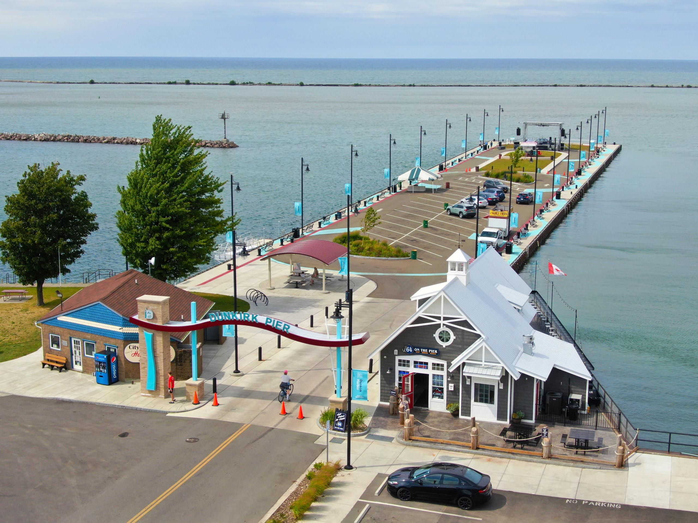
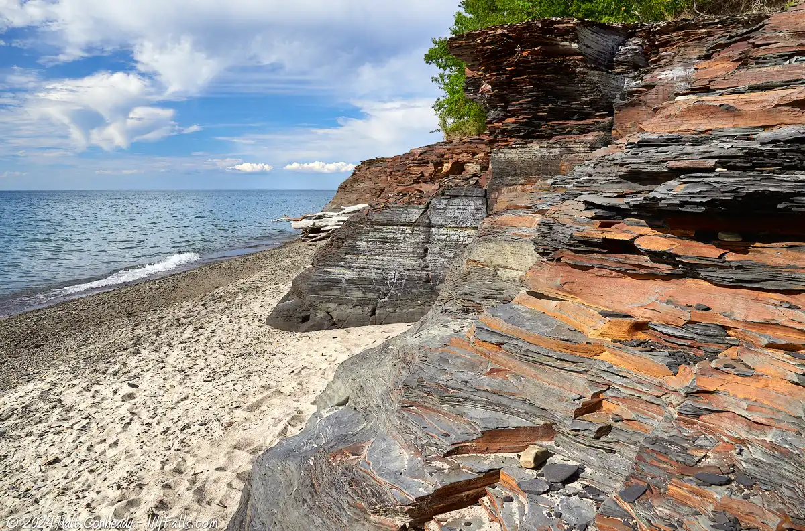

Dunkirk Lighthouse

In 1875-1876, a 61-foot stone tower and a beautiful Victorian residence were constructed to replace the original tower, which was threatened by erosion. These structures still stand today. Bricks from the original keeper's house formed the foundation for the new house. The old cylindrical tower was moved adjacent to the new keeper's residence. A square tower was built around the old tower "to be more compatible with the keeper's house." (Tinney, Burdett-Watkins, p. 13; Seaway Trail Video)
Dunkirk Boardwalk

The City of Dunkirk's Boardwalk Marketplace has seven tourist-friendly commercial and dining establishments, all accessible along a 160 foot long covered boardwalk. Browse the shops for unique gifts and enjoy the eateries, all the while taking in the scenic Chadwick Bay!
Point Gratiot Park

The "Point" is one of the most visited regions in western New York by birders for spring migrants. Significant sightings include Orchard Oriole, Whip-poor-will, and over 30 species of warblers including Prothonotary, Prairie and Worm-eating. Red-headed Woodpeckers nest here.
Learn More